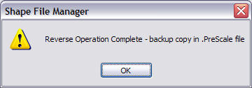

- Uncompression/Compression
When you open SFM, you will be presented with a screen something like shown below; click on "Parent" to move up a folder, click on a folder name to open that folder; use the scroll bar at right or the mouse-wheel to scroll folder lists that are off-screen.
To modify any shape file, you need to uncompress it first. Move your mouse pointer over the grey Options box beside the shape file you wish to uncompress. A minimal series of options will appear. Click on Uncompress.
After a few seconds, the file size will change and SFM will show your file as Uncompressed. Mousing over the Options box now gives you an expanded range of choices.
Once you've finished with the model, you Compress the shape file by selecting Compress when the list of options appear.
- Scale
The first option for your uncompressed model is Scale: it is now a simple matter to create or distort an existing model to suit custom applications.
For example, you can distort a tunnel entrance along all or any axis to achieve a larger tunnel.
Clicking on scale pops up a new dialogue box with a series of further options: here we will use JP1Tunnel.s as an example (if you're following this tutorial, it would be a good idea to first make a backup by clicking copy/paste on the shape file to give you a "Copy of JP1Tunnel1.s").
Check the box for "Scale same in all directions" and type in 2.5; static models have no ENG/WAG file, so uncheck that option as well:
This achieves a new shape file which has been enlarged in all axes by a factor of 2.5. The original JP1Tunnel is shown to the left of the altered version (below):
You can also just alter one axis: uncheck the "Scale same in all directions" and fields appear for all three axes: x (width), y (height), z (length). This time we set the Y axis to be scaled by a factor of 2.5, but left the X and z axis at no change (=1).
The result can be seen in the image below, JP1Tunnel has been enlarged in only the "y" axis by a factor of 2.5. The original JP1Tunnel is shown in front of the altered version:
When Australian designer Michael Thompson reskinned Jens-Chris Baerenz's E8 to resembler an Australian outline NSWGR 42 class, he shrank the model 5-10% to bring the model within Australia's more restrictive loading gauge.
Check the images below:

Warning: scaling locos/stock may not always work as the WAG/ENG files sometimes can get slightly corrupted.
- Texture Modes
Awaiting departure early morning (no specular lighting enhancement).
Notice the sunlight glinting off the locomotive in the lower image. Click on "Texture Modes". The following screen will appear. Click on "HiShine" for the part of the model you wish to enhance. Save your work and test it in MSTS.
- Distance Levels
Distance Visibility / Level of Detail(LOD) Adjustment lets you adjust the maximum distance at which objects are visible (modellers should really be doing this, so that small scenery items disappear over 500m) and adjust the level of detail. This will help improve frame rates on routes with a high object density.
The pop-up box varies slightly if there is one (see above) or more than one (see below) LOD.
- Shift
As well as resizing a model, you can shift the model on its axis. A good example of this is 310wdcar.s located in the 310 folder: this is a MSTS default wagon that rumbles along with the wheels embedded in the rails (image immediately below).
Using SFM, I shifted the model +0.05m in the "y" direction.
As you can see, the wheels now ride on the rails, rather than in them.
- Reverse
You can also "Reverse" or rotate a model 180o on its axis. This command runs immediately you click on it. This message pops up when the reversing is complete.

This command is very useful for diesels running in MU: "flipping" them in Consist Builder means that the loco runs with its bogies turning in the opposite direction to the curve. Note the bogies on the rear (brown loco) on the image below are rotating the wrong way.
Reversing the shape and adding the reversed shape as a normal trailing unit ensures that the bogies follow the track.
- Wordpad Edit .S
Once the .s file is uncompressed, you can edit it in a Unicode-aware editor: this link opens the file in Wordpad. I generally use this to change the name of the embbedded ACE filenames when I'm reskinning.
- WordPad Edit .SD
This command uses Wordpad to open the .sd file that matches the .s file.